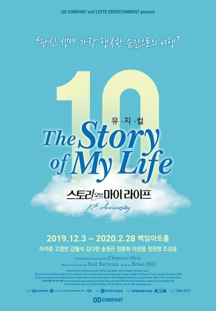

스토리 오브 마이 라이프
The Story Of My Life

"당신 생애 가장 행복한 순간으로의 여행"
찰나의 순간 우리가 놓쳐버린 소중한 일상과 인연에 대한 이야기
소개 Intro
순수했던 어린 시절부터 세월의 흐름 속에 자연스레 변해가는 두 주인공의 모습을 통해
관객들은 마치 나의 이야기인 것처럼 공감대를 형성하게 되고 저마다 기억 속에 자리 잡고 있는 순간들을 떠올리며
진정 소중한 것이 무엇인지를 다시 한번 생각하게 된다.
동화 속 서재를 옮겨놓은 듯한 무대, 서정적이고 아름다운 선율의 음악,
빈틈없는 서사와 함께 펼쳐지는 감동의 스토리까지!
등장 인물 Characters
- 토마스 위버 Thomas Weaver
- 앨빈 켈비 Alvin Kelby
넘버 Numbers
- Write what you know (아는 걸 써)
- Mrs.Remington (레밍턴 선생님)
- The greatest gift (최고의 선물)
- 1876
- Normal (평범해져)
- People carry on (계속 살아가)
- The butterfly (나비)
- Saying goodbye(part 1) (우리 처음 이별할 때)
- Here's where it begins (이제 시작이야)
- Saying goodbye(part 2) (두 번째 이별했을 때)
- Independence day (이제 떠나, 기다려)
- Saying goodbye(part 3)
- I like it here (여기 좋아 난)
- You're amazing,Tom (정말 대단해)
- Nothing there/Saying goodbye(part 4)
- I didn't see Alvin (그 때 난 보지 못한거죠)
- This is it (이게 전부야)
- Angels in the snow (눈 속의 천사들)
관련 영상 Videos